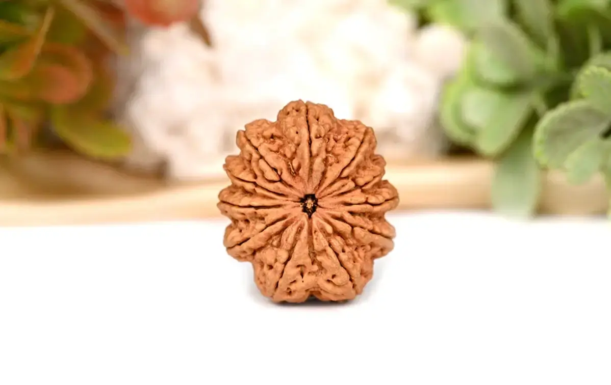
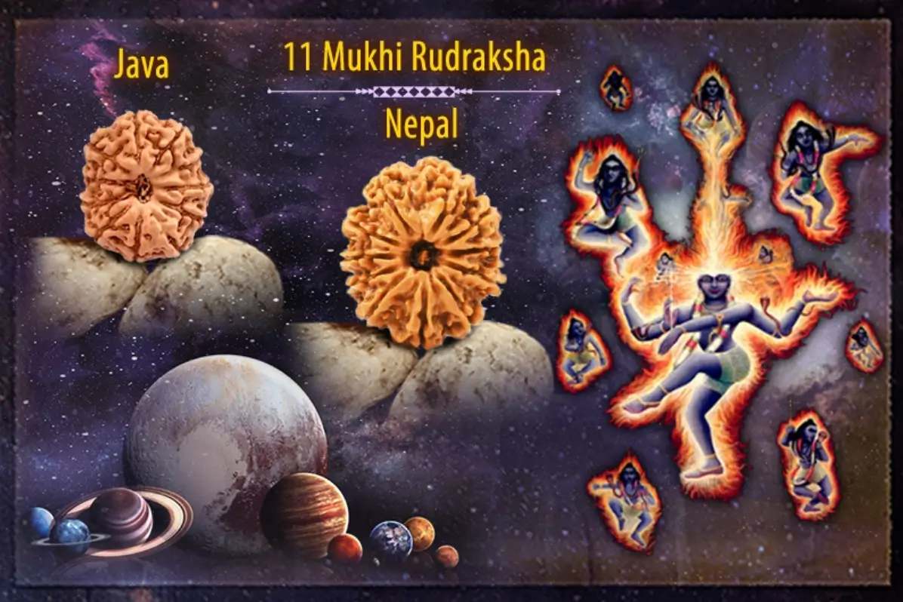

Gyarah Mukhi Rudraksha - Hạt Kim Cang 11 Khía

Hạt Rudraksha 11 Mukhi (Gyarah Mukhi Rudraksha) hay còn được gọi là hạt Kim Cang 11 Khía. Hạt Rudraksha được thu hoạch từ cây Elaeocarpus ganitrus, là loại cây thân gỗ mọc ở một số nơi tại Nam Á và Đông Nam Á.
Hạt Kim Cang 11 Khía là một loại hạt tương đối hiếm, chỉ chiếm khoảng 1% trong tổng số hạt Rudraksha được thu hoạch. Do đó, giá trị của loại hạt này cũng cao hơn so với các loại hạt khác.
Cấu tạo bề mặt hạt cũng đặc biệt không kém với những đường khía sần sùi, tạo cảm giá gồ ghề khi chạm vào khác với bề mặt trơn bóng của các loại hạt khác. Hạt có hình dạng gần như tròn, với 11 đường khía nổi rõ có kích thước đa dạng từ 8mm - 20mm, về màu sắc hạt có thể là nâu đỏ, nâu đen hoặc vàng nâu tùy thuộc vào mức độ xử lý của hạt.
Ý nghĩa của hạt Rudraksha 11 Mukhi

Hạt Rudraksha 11 Mukhi được thần Hanuman ban phước, còn được gọi là Ekadash Rudra. Thần Hanuman là vị thần luôn ban phước lành về tuổi thọ, thành công trong sự nghiệp và hạnh phúc. Theo kinh văn Padma Purana (thể loại kinh văn cổ trong tôn giáo Hindu), bất kỳ ai đeo 11 Mukhi đều được biết đến là người được ban phước dồi dào với tất cả các đức tính của thần Hanuman. Họ sẽ có được kỹ năng đàm phán, sự tự tin, trí thông minh, sức mạnh thể chất và một trí óc mạnh mẽ.
Hạt này được tin rằng có sức mạnh độc nhất để kiểm soát các giác quan vật lý. Khi đeo nó khiến người đeo có cảm giác không sợ hãi và rất được khuyến khích trong quá trình thiền định. Hạt này mang lại may mắn, tài lộc, kỹ năng quản lý con người và sức mạnh để giành quyền kiểm soát tuyệt đối các giác quan. Mười một Rudras cư trú trong 11 mặt của hạt này.
Nó giúp người đeo ngày càng thăng tiến hơn trong sự nghiệp, tăng cường vai trò lãnh đạo và làm cho anh ta nổi tiếng trong vòng tròn bạn bè của mình...
Lợi ích của hạt Rudraksha 11 Mukhi
Hạt Rudraksha 11 Mukhi là một loại hạt quý hiếm mang lại nhiều lợi ích cho người đeo, bao gồm:
Tăng cường sức khỏe
Hạt Rudraksha 11 Mukhi có khả năng điều hòa các luân xa trong cơ thể, giúp tăng cường sức khỏe thể chất và tinh thần.
Luân xa là các trung tâm năng lượng trong cơ thể, có vai trò quan trọng đối với sức khỏe thể chất và tinh thần. Khi các luân xa bị tắc nghẽn hoặc mất cân bằng, sẽ dẫn đến các vấn đề về sức khỏe. Hạt Kim Cang 11 Khía hỗ trợ điều hòa các luân xa, giúp chúng hoạt động hiệu quả, từ đó mang lại nhiều lợi ích cho sức khỏe.
Tăng cường trí thông minh
Hạt Rudraksha 11 Mukhi giúp cải thiện trí nhớ, tăng cường khả năng tư duy và sáng tạo. Tăng khả năng kích thích não bộ giúp tăng cường khả năng tiếp thu và xử lý thông tin, từ đó giúp cải thiện trí nhớ, khả năng tư duy và sáng tạo.
Tăng cường may mắn
Mang lại may mắn, thành công trong công việc và cuộc sống.
Tăng cường sự bảo vệ
Hạt Rudraksha 11 Mukhi giúp bảo vệ người đeo khỏi những điều xấu xa, tiêu cực.
Hạt Rudraksha 11 Mukhi được coi là một vật phẩm phong thủy giúp bảo vệ người đeo khỏi những điều xấu xa, tiêu cực. Người đeo hạt Rudraksha 11 Mukhi sẽ được che chở khỏi những tai ương, giúp họ luôn bình an, may mắn.
Cách đeo hạt Rudraksha 11 Mukhi
Hạt Rudraksha 11 Mukhi có thể được đeo như một vòng tay hoặc một chuỗi. Bạn có thể xâu nó bằng sợi tơ tằm/len hoặc bọc nó bằng bạc hoặc vàng. Hạt Rudraksha phải chạm vào da của bạn để nó được kích hoạt và bắt đầu hoạt động trên các khu vực cụ thể.
Nhiều người đã được hưởng lợi từ mười một mukhi Rudraksha mạnh mẽ, mang lại ý nghĩa thực sự cho cuộc sống vì nó giúp một cá nhân lắng nghe được nội tâm, can đảm đưa ra quyết định một cách khôn ngoan và phân tích mọi tình huống một cách rõ ràng mà không bị thiên vị, bối rối hay bị ảnh hưởng. Hạt Kim Cang 11 Khía đã nâng cao tinh thần của nhiều cuộc sống và đã được chứng minh là có lợi cho học sinh tham gia các kỳ thi cao hơn. Ngoài những lợi ích đã đề cập ở trên, mười một mukhi Rudraksha còn giúp giảm các chứng rối loạn hô hấp như viêm phế quản. Mười một mukhi Rudraksha có thể được đeo bởi những người khao khát đạt được thành công và ổn định trong cuộc sống cũng như những người có tham vọng.
Giá của hạt Rudraksha 11 Mukhi
Hạt Rudraksha 11 Mukhi có thể được đeo bởi những người khao khát đạt được thành công và ổn định trong cuộc sống cũng như những người có tham vọng. Hạt này có giá từ khoảng 100$ cho đến 400$ cho một hạt tùy thuộc vào kích thước nguồn gốc của hạt.